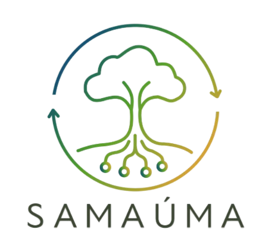

01
Educação inclusiva
MapEdu+
Mostra à família quais escolas têm estrutura, profissional de apoio e prática de inclusão. Hoje isso se descobre ligando de escola em escola.
A ASA CÍVICA escreve software para problemas que ainda se resolvem no telefone e no papel. Começamos por dois, que são os que temos na frente em Porto Velho: descobrir qual escola atende de verdade uma criança com deficiência, e provar para onde vai o resíduo de quem produz muito lixo. A teimosia por trás dos dois vale para qualquer área — informação que ninguém consegue conferir não serve para decidir nada.
O MapEdu+ mostra à família quais escolas têm rampa, profissional de apoio e prática de inclusão — coisa que hoje se descobre ligando de escola em escola. O MapEdu+Dados entrega essa mesma base organizada para quem administra a rede. E o SAMAÚMA acompanha o resíduo de um estabelecimento até a balança do destino, com comprovante que qualquer pessoa confere pelo celular. São os três primeiros: a arquitetura por baixo deles não é de educação nem de resíduo, é de prova.
Mostra à família quais escolas têm estrutura, profissional de apoio e prática de inclusão. Hoje isso se descobre ligando de escola em escola.
Secretaria e prefeitura passam a saber o que existe na rede: patrimônio, salas, acessibilidade e como os recursos estão distribuídos.
Um decreto de 2018 proíbe grande gerador de usar a coleta pública, e ninguém tem como verificar. O SAMAÚMA registra cada carga até o destino.
A ASA CÍVICA nasceu em Porto Velho, de uma constatação que não é sobre educação nem sobre resíduo: quase toda decisão de interesse público é tomada com informação que ninguém consegue conferir. A escola diz que é inclusiva. O transportador diz que levou o resíduo para o lugar certo. O relatório diz que o recurso foi aplicado. Ninguém checa.
Então a gente escreve sistemas que registram quem fez o quê, quando, e deixam isso aberto para conferência. Não é uma ideia bonita: é a diferença entre um número que se defende numa prestação de contas e um número que cai na primeira pergunta. Educação e resíduos foram por onde começamos, porque são os problemas que temos na frente. O método serve a saúde, assistência, obra, patrimônio — qualquer área em que alguém precise comprovar o que afirma.
Fazer com que informação de interesse público possa ser conferida por quem ela afeta, e não apenas por quem a produz, em qualquer área onde essa informação decida alguma coisa.
Que os sistemas que fazemos em Rondônia sirvam de padrão para outros municípios do país, e que a origem amazônica seja a credencial, não a desculpa.
Somos cinco pessoas em Porto Velho que já entregaram sistema funcionando antes de existir contrato. Quem contrata a ASA CÍVICA vê o produto rodando na primeira reunião.
Os três primeiros produtos da ASA CÍVICA: dois em educação, um em resíduos sólidos. A mesma arquitetura sustenta os três, e é ela que permite entrar em outras áreas sem recomeçar do zero.
Uma mãe que precisa matricular um filho autista em Porto Velho hoje faz o seguinte: liga para uma escola, pergunta se tem profissional de apoio, ouve um talvez, liga para a próxima. O MapEdu+ existe para encurtar esse caminho.
A busca filtra por bairro, etapa de ensino e necessidade específica. Cada escola tem um perfil com fotos, contato direto, equipe de apoio e o que existe de acessibilidade na estrutura — para a visita começar já sabendo o que perguntar.
Quero conhecer o MapEdu+É a mesma base, vista do outro lado do balcão. Secretaria de educação, diretoria de escola e prefeitura usam o MapEdu+Dados para saber o que existe na rede: patrimônio, salas, recursos de acessibilidade e como tudo isso está distribuído entre as unidades.
O resultado sai em relatório e em planilha, no formato que o processo administrativo aceita. A pergunta que ele responde é banal e ninguém consegue responder hoje: quantas escolas da rede têm o que dizem ter.
Falar sobre o MapEdu+Dados
O SAMAÚMA é um sistema de rastreabilidade da destinação de resíduos sólidos de grandes geradores. Ele acompanha cada carga do estabelecimento até a unidade que a recebe, registrando três medições de três responsáveis diferentes: a quantidade estimada por quem gera, a massa observada em campo e a massa aferida na balança do destino.
Quando as medições divergem além da tolerância, o sistema abre pendência e a decisão fica com a administração pública, com justificativa registrada. Nada é sobrescrito: correção entra como evento novo, com o valor anterior preservado. Ao fim existe comprovante verificável por QR Code, que qualquer pessoa confere sem login, e uma trilha em que cada evento tem autor e horário.
O estabelecimento, a cooperativa de catadores e a prefeitura trabalham no mesmo fluxo. O catador registra a coleta sem precisar de celular próprio, e o que ele produziu fica documentado no nome dele. O sistema mede o resultado da política de resíduos; quem produz esse resultado continua sendo quem opera a política.
Agendar uma demonstração do SAMAÚMAOs três sistemas são produtos nossos. Isto é o que a ASA CÍVICA faz quando é contratada para resolver um problema que ainda não tem produto.
Desenvolvimento de sistema para órgão público, instituição de ensino ou organização da sociedade civil, em qualquer área. Testado em aparelho de entrada e conexão ruim, porque é nele que o sistema vai rodar de verdade.
Instalar o sistema é a parte fácil. Formamos as equipes que vão operar, acompanhamos os primeiros meses e corrigimos o que aparecer. Sistema que ninguém sabe usar produz dado ruim, e dado ruim é pior que dado nenhum.
Painéis e relatórios em que cada número declara de onde veio: medido, informado, calculado ou parâmetro adotado. Exportáveis em formato aberto, para instruir processo sem depender da gente.
A ASA CÍVICA construiu seus sistemas antes de ter contrato, com dinheiro próprio. Isso tem um lado ruim, que é o caixa, e um lado bom: quem senta com a gente vê software funcionando, não apresentação de slides.
Procuramos parceiros para três coisas concretas: chegar a mais municípios de Rondônia, contratar reforço técnico e sustentar a operação enquanto os primeiros contratos maduram. Conversa direta, sem intermediário.
Escreva contando o que você precisa resolver. Respondemos com o que dá para fazer e o que não dá.
asacivica@gmail.comTrabalhamos melhor com quem fica. Piloto de três meses que ninguém acompanha depois não valida nada.
Porto Velho — RO